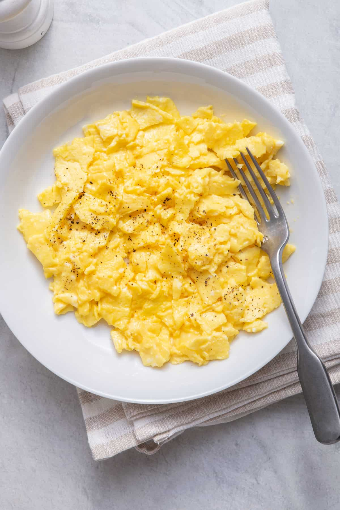

Scrambled Eggs

Ingredients
- 2-4 Eggs
- Salt
- Pepper
- Butter
- Sour Cream (or cottage cheese, yogurt)
Directions
- Turn on stovetop, add 1 tsp butter and mix
- Crack eggs directly into skillet
- Continuously mix the eggs and cycle through taking skillet
off and on stovetop
- After a minute, add salt and pepper
- When eggs soft/creamy consistency, turn off stovetop and add
sour cream, cottage cheese or yogurt
- Place eggs on plate and serve!
Return to main page.